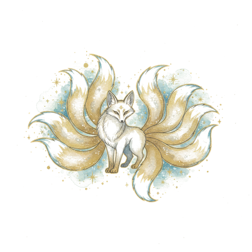
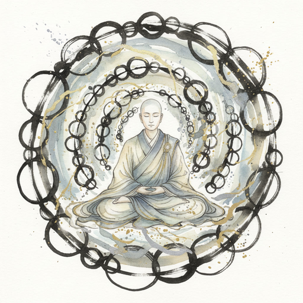
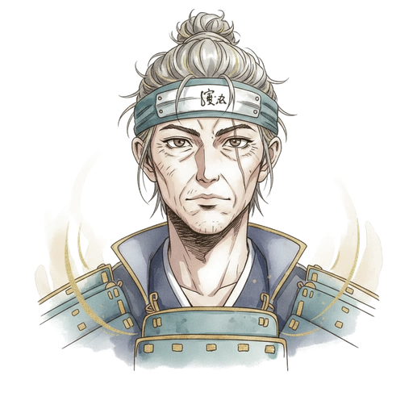
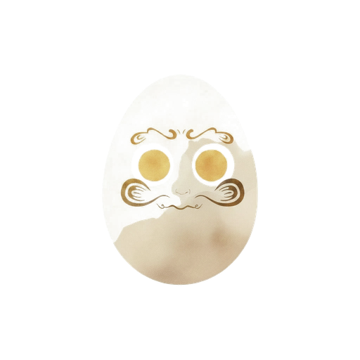
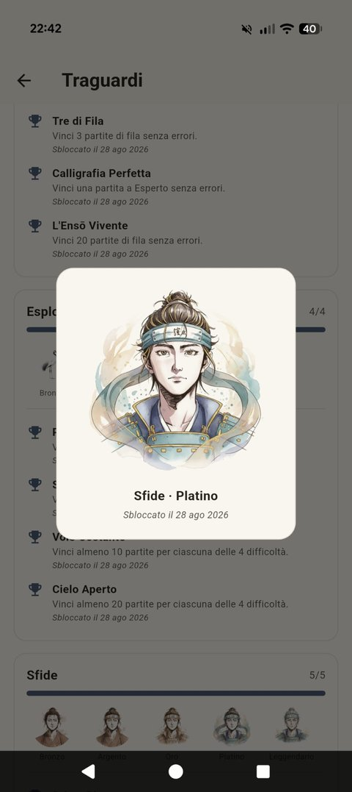
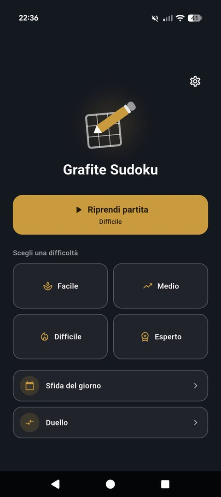
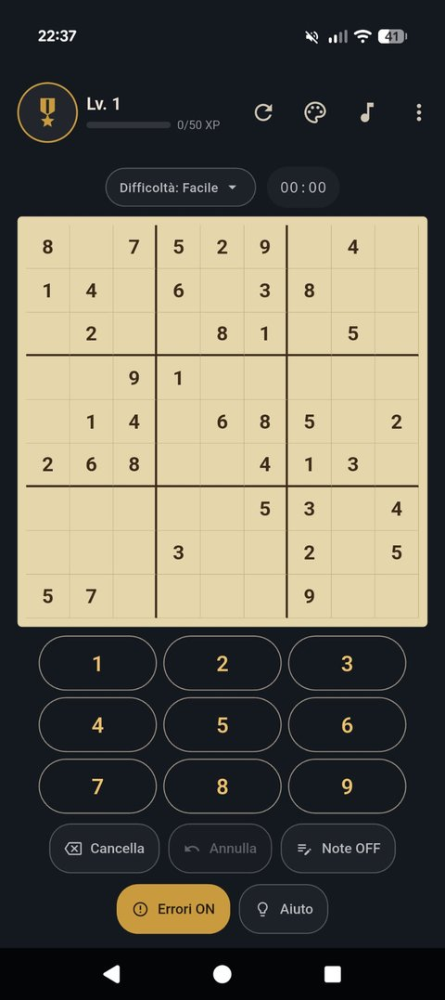
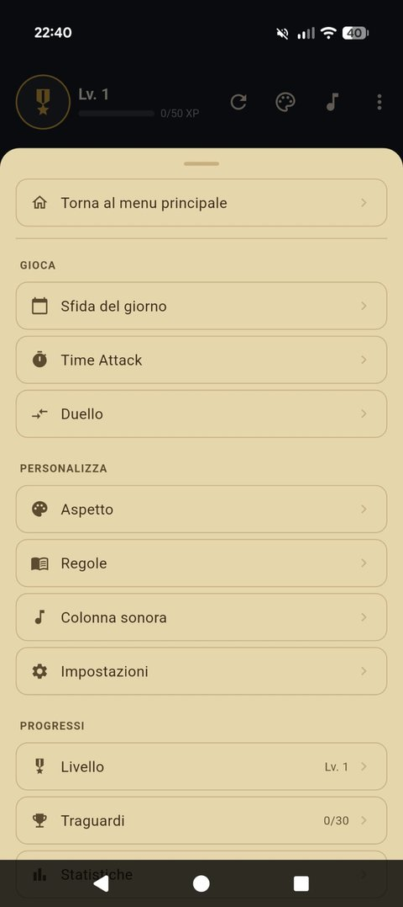
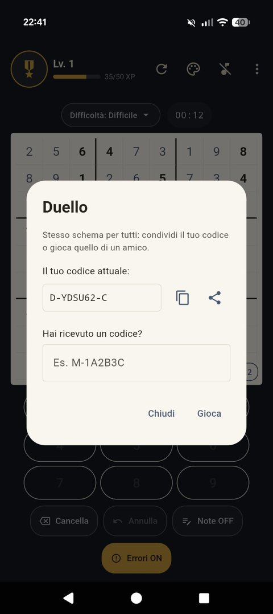

Griglie disegnate come pagine di un taccuino, temi carta dipinti a mano, livelli da scalare e sfide da lanciare agli amici. Nessuna pubblicità. Nessun tracciamento. Mai.
Un sudoku pensato per essere bello da guardare quanto da giocare — e per rispettare chi gioca.
Nessun banner, nessun video forzato, nessun tracciamento. L'app si sostiene con un caffè offerto da chi vuole, non vendendo attenzione o dati.
Cinque texture di carta diverse per la griglia — dalla crema alla pergamena — per giocare su una pagina che sembra vera.
Ogni partita fa guadagnare esperienza: si sale di livello, si sbloccano titoli, si vede il proprio percorso crescere partita dopo partita.
Stessa griglia, tensione diversa: risolvi lo schema prima che scada il tempo, per difficoltà crescenti.
Lezioni guidate che insegnano le vere tecniche di risoluzione del sudoku, un passo alla volta — non solo tentativi a caso.
Genera un codice sfida dalla tua partita e mandalo a un amico: stesso schema, tempi a confronto.
Nell'app per Android, ogni traguardo sblocca un compagno di viaggio — sei linee, ognuna con più stadi di crescita.

Velocità Kitsune · leggendario
Padronanza Monaco · leggendario
Sfide Samurai · leggendario
Costanza Daruma
La schermata Traguardi, nell'app30 trofei da sbloccare, l'Accademia con le sue lezioni guidate, statistiche complete e la sfida del giorno — tutto salvato sul tuo telefono, mai su un server.
Alcune schermate dall'app.




La versione browser include il sudoku completo, i livelli, il Time Attack e le sfide tra amici — pensata per farti assaggiare il gioco. Trofei, avatar da sbloccare e l'Accademia con le sue lezioni guidate restano un'esclusiva dell'app per Android.